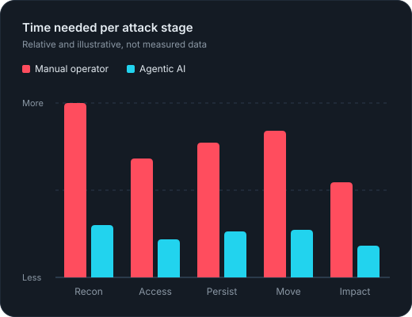

Quiet entry
Phishing, stolen passwords, and exposed services get attackers in without alarms.
Cybersecurity briefing
A short guide to the stages of a modern intrusion, and what happens when autonomous AI agents take over the slow, tedious parts.

Most modern cyber attacks do not start with a dramatic break-in. They begin with a convincing email, a reused password, or an exposed service, then move quietly through a network before causing damage. Many attackers are organized groups that sell access to other criminals, so a single intrusion can end in data theft, extortion, or ransomware. Agentic AI is making each step faster, cheaper, and harder to spot.
Phishing, stolen passwords, and exposed services get attackers in without alarms.
Attackers often stay inside a network for days or weeks before they act.
One foothold can be turned into data theft, extortion, or ransomware.
Most intrusions follow the same five stages, whether the attacker is a lone criminal or a state-backed group.
Attackers collect information about the target from company websites, social media, job postings, leaked data, and scans for exposed systems.
The most common entry points are phishing emails, stolen or reused credentials, unpatched software, and misconfigured cloud services.
Once inside, attackers set up ways to return later and try to gain higher-level permissions, often by stealing more credentials.
They move across the network toward valuable targets such as file servers, backups, and identity systems.
The final stage is data theft, ransomware encryption, or extortion, sometimes with threats to publish the stolen data.
Agentic AI can plan, use tools, and check its own results. Applied to the stages above, it compresses the time and skill an attack needs.
AI agents can gather and summarize public information about people and systems in minutes instead of days.
Language models write fluent, context-aware messages in any language, removing the errors that once made phishing easy to spot.
Cloned voices and deepfake video can imitate executives on calls to approve payments or reset access.
AI tools can help analyze newly disclosed vulnerabilities, shortening the time between disclosure and attack.
An agent can chain tools together, check whether each action worked, and try another approach without a human at every step.
Tasks that once needed experienced operators can be done by less skilled actors, which increases the number of attacks.
No single control stops an AI-assisted attack, but a few habits make every stage harder.
Use passkeys or hardware security keys instead of passwords alone.
Limit what each account can access so a stolen credential goes less far.
Keep internet-facing systems updated and remove services that are not needed.
Use AI to spot unusual behavior quickly, while keeping people in charge of high-impact decisions.
Keep backups separate from the main network and test restores regularly.
For urgent payment or access requests, confirm through a second channel, even if the voice or video looks real.
Starting references: MITRE ATT&CK and CISA.